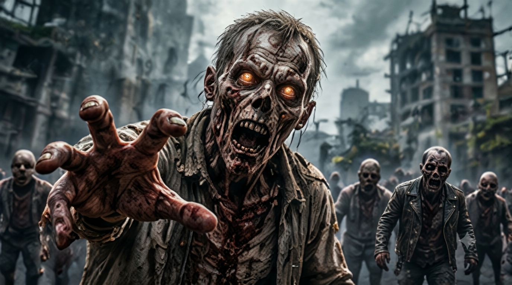
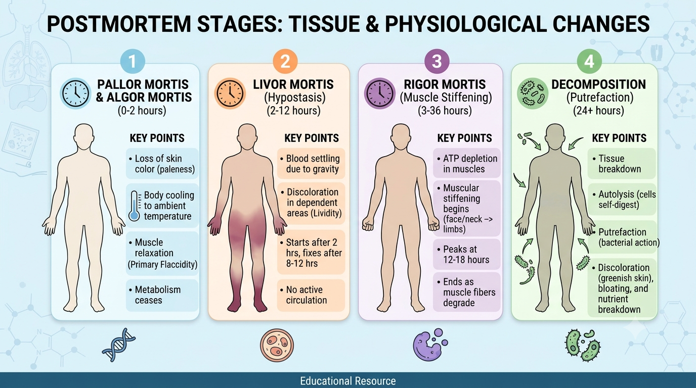
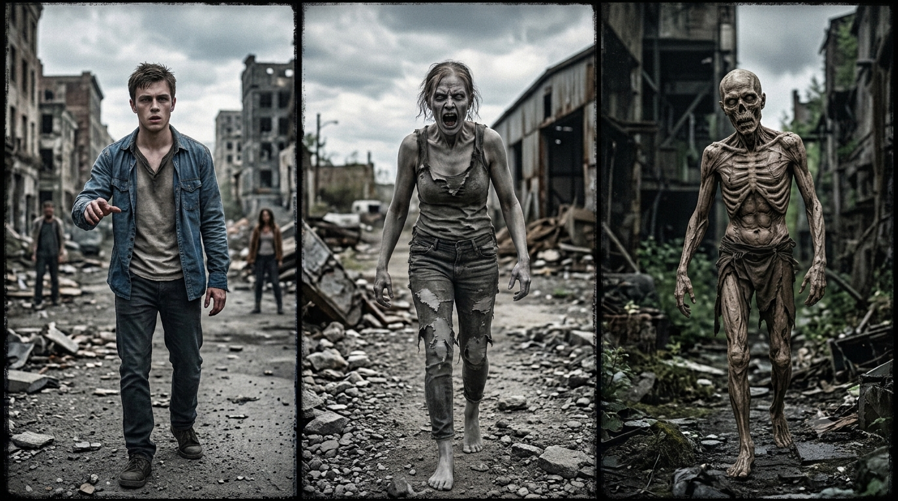

Realistic Zombies: What Would a Real Walking Corpse Be Like?

Zombie stories rarely agree on what a zombie actually is. Some are dead bodies that get up again. Others are living people overwhelmed by an infection. Some shuffle slowly, others sprint, climb, swim, track people by smell, or keep moving after losing half their body. Those differences make great horror—but what would happen if we judged zombies by real human biology?
The uncomfortable answer is that a genuinely dead human body could not walk around, hunt people, or bite with purpose under known biology. Once circulation and breathing stop, the brain loses its oxygen supply, muscles stop being able to work normally, and the body begins a one-way process of postmortem change. Decomposition can preserve some features or destroy them faster, but it does not restart the systems required for coordinated movement. [1]
That does not mean every zombie story is equally unrealistic. A dangerous infection could, in principle, alter the behaviour of a person who is still alive. That would be an infected human, not an animated corpse—and it would still have to obey the limits of oxygen, hydration, energy, injuries, and disease.
- The Basic Problem: Death Stops Movement
- The First Seconds and Minutes
- Hours, Days, Weeks, and Months: What Happens to a Body?
- Speed, Strength, and Endurance: Could Zombies Run?
- Could Zombies Grip, Climb, Crawl, or Open Doors?
- Sight, Hearing, Smell, and Other Senses
- Would Injuries Stop Them?
- Heat, Cold, Rain, and Sunlight: Environment Changes the Clock
- What Happens to Zombies in Water? Would They Float or Sink?
- Insects, Bacteria, and Scavengers: Nature Would Not Ignore the Bodies
- Food, Energy, and Bite Transmission: Why Do Zombies Eat?
- Undead, Fast Infected, and the Rules of Zombie Fiction
- So, What Would a Realistic Zombie Be Like?
- Sources and Further Reading
The Basic Problem: Death Stops Movement
Walking requires several systems to work together: the brain and spinal cord coordinate movement, nerves carry signals, muscles contract using energy, and circulation supplies oxygen. Tendons, joints and balance systems turn those contractions into controlled steps.
After irreversible death, breathing and circulation have stopped. Brain and muscle cells can no longer maintain normal function, and the body cannot coordinate movement or respond to its surroundings. Brain tissue is especially vulnerable to a loss of oxygen. [2]
A body may jerk, stiffen, settle or shift as tissues change, gases build up, or gravity and water move it. These are passive or postmortem changes—not purposeful actions such as hearing a footstep, turning, walking and biting. Reanimated corpses therefore require a supernatural or explicitly fictional mechanism.
The First Seconds and Minutes
There is no biological stage in which a person becomes a zombie. When circulation stops, the brain loses its supply of oxygen and glucose. Consciousness and coordinated action fail; muscles also lose the conditions needed for repeated contractions. [2]
Important distinction: cardiac arrest is not always irreversible death. CPR and an automated external defibrillator can sometimes restore circulation. That is emergency resuscitation, not a dead body returning to life after decomposition. [5]
Once death is irreversible, stored energy in the muscles is limited and cannot support continued walking, sprinting or biting. Individual cells may remain active briefly, but that does not mean the whole body can function as an integrated organism.
Hours, Days, Weeks, and Months: What Happens to a Body?
There is no universal decomposition clock. Temperature, humidity, clothing, injuries, insect access, and whether remains are indoors, outdoors, buried or submerged all affect the process. Forensic estimates use ranges and context, not a fixed countdown. [1] [3]
The answer to “how long until a corpse can walk?” is simple: it cannot. Rigor mortis is temporary stiffness; when it passes, that is tissue change, not renewed muscle control.
| Approximate period | Typical changes | What it means for a zombie |
|---|---|---|
| Minutes to hours | Circulation and breathing stop; the body cools and blood settles. | No purposeful movement or sensory tracking. |
| Hours to days | Rigor mortis may develop and later resolve; timing varies. | Stiffness is not active control. |
| Days onward | Autolysis, microbial activity, swelling and discoloration may occur. | Soft tissues that support movement begin to break down. |
| Weeks to months | Decomposition may progress, or tissues may dry in suitable conditions. | Muscles, tendons and joints become less capable of holding together. |
| Months to years | Remains may become skeletonized, mummified or otherwise preserved. | A skeleton or preserved body still cannot move itself. |

Speed, Strength, and Endurance: Could Zombies Run?
A dead body cannot run or even shuffle purposefully. Both require repeated muscle contractions, balance corrections and a functioning nervous system. Athletic fitness in life does not survive as a usable power source after death.
A living infected person could run or attack for a time, but would still need oxygen, water, energy and recovery. Fever, overheating, dehydration, exhaustion and injury would limit performance. An infection might impair judgement or reduce caution; it would not create unlimited stamina or superhuman strength.
Could Zombies Grip, Climb, Crawl, or Open Doors?
Grip requires active muscles in the fingers and forearms, working nerves, tendons and stable joints. Rigor mortis may leave fingers stiff or curled, but a fixed hand is not a hand that can deliberately grasp a moving person.
Climbing, crawling and getting up require coordinated force from the arms, shoulders, trunk and legs, plus balance and constant adjustments. A corpse cannot perform these actions. A living infected person could, but fractures, torn tendons and damaged joints would still reduce what they can do.
A crowd of living people might push over a weak barrier. A single corpse repeatedly throwing itself at a door would damage its own bones and soft tissue as well. Fiction often makes zombie bodies both decayed and conveniently indestructible; real biology does not provide both advantages.
Sight, Hearing, Smell, and Other Senses
A corpse cannot identify and follow a target. Vision needs functioning eyes, nerves and brain pathways; hearing and smell also require sensory receptors and a working nervous system. After death, eye changes such as corneal clouding can reduce clarity, while reflexes and sensory processing cease. [1]
Decomposition can produce strong odours, but being surrounded by a smell is not the same as detecting and tracking a particular person. A dead ear is not an always-on microphone, and a corpse cannot use touch or balance to navigate stairs and obstacles.
A living infected person might retain some senses, depending on the illness. Fever, delirium, brain injury or damage to the eyes and ears could also impair them. Superhuman night vision or hearing through walls would need a fictional explanation.
Would Injuries Stop Them?
A living infected person might ignore pain or fail to protect an injured limb, but the damage still matters. A fracture can stop running, blood loss can cause shock, and chest injuries can make breathing difficult. Reduced pain awareness changes behaviour, not the physical consequences of an injury.
For a corpse, the basic problem is more severe: it cannot move purposefully in the first place. Damage to muscles, tendons, joints or the spinal cord would further undermine any fictional movement. Brain damage removes coordination and perception; it does not create a simpler or tougher control system.
Heat, Cold, Rain, and Sunlight: Environment Changes the Clock
For a real body, environmental conditions change the speed and appearance of decomposition; they do not restore movement. Warm, humid conditions often accelerate decay and insect activity. Cold can slow these processes. Dry conditions may preserve skin and other tissues through mummification, but preservation is not life. These are tendencies, not reliable timelines. [3]
Rain, wind and sunlight affect cooling, moisture and drying. Sunlight does not make a corpse burst into flames, and rain does not make remains harmless overnight. For a living infected person, exposure creates ordinary risks such as dehydration, heat illness, hypothermia and infected wounds.

What Happens to Zombies in Water? Would They Float or Sink?
A human body may initially sink or float depending on body composition, clothing, air in the lungs, water salinity and other conditions. Decomposition gases can later change buoyancy, so there is no fixed rule or timetable. [3]
Floating is not swimming. A body drifting with a current is being moved by water; it is not navigating. Swimming, climbing out or walking underwater requires active muscle control, balance and breathing. Saltwater does not reliably preserve remains or make them mobile.
Insects, Bacteria, and Scavengers: Nature Would Not Ignore the Bodies
Microbes already present in and on the body contribute to tissue breakdown. Insects such as blowflies may colonize exposed remains, while scavengers can feed on them depending on the species and setting. Temperature and access strongly affect the process. [1]
A long-term walking corpse would have to resist decomposition while keeping its muscles, tendons and joints flexible enough to function. Those requirements conflict. Animals would not all react alike: some may avoid remains, others investigate or scavenge. There is no universal animal response to a fictional zombie.
Food, Energy, and Bite Transmission: Why Do Zombies Eat?
Living organisms use food to supply energy and materials for cells, repair and movement. A corpse has no functioning circulation, digestion or metabolism to turn a meal into usable energy. Eating cannot power a dead body.
A fictional infection could spread through bites, saliva, blood, respiratory droplets, contaminated water or another route. Biting is a dramatic storytelling device, not a biological requirement of infection. If a creature must eat to stay active, it needs functioning metabolism and is better described as a living infected host.
Undead, Fast Infected, and the Rules of Zombie Fiction
Zombie stories use different rules. Separating the dead from the living makes the science easier to judge.
| Type or example | How it compares with biology |
|---|---|
| Undead, as in The Walking Dead | Reanimated corpses that keep moving are supernatural or fictional; ordinary decomposition cannot preserve active movement. |
| Fast infected, as in 28 Days Later | Living people altered by illness avoid the dead-body problem, but extreme aggression and prolonged performance remain fictional. |
| Fungal infected, as in The Last of Us | Living hosts are more plausible than reanimated corpses, but the human infection, control and transformations are speculative. |
| Intelligent or tireless undead | Memory, planning and coordination require functioning neural systems; supernatural rules are needed to explain them after death. |
Rabies is sometimes compared with zombie fiction because it can affect the brain and cause agitation, confusion and swallowing difficulties. But it is a severe infection, not a model for a controlled, long-running outbreak: once symptoms appear, it progresses rapidly and is almost always fatal. It does not create superhuman strength or purposeful hunting. [4]
Any fictional living infection still needs limits: oxygen, water, food, sleep, temperature regulation, injuries and time. Real illnesses should not be portrayed as automatically making people violent.
So, What Would a Realistic Zombie Be Like?
A literal corpse could not walk, run, sense people or hunt. Rigor mortis and decomposition alter a body; they do not bring it back. The more biologically coherent version is a living, seriously ill person whose behaviour may be altered but whose body remains vulnerable to exhaustion, dehydration, injuries and disease.
Undead horror can still be compelling. It simply needs to treat reanimation as a supernatural or explicitly fictional rule—not as ordinary human biology.
Sources and Further Reading
These medical and forensic sources explain the biology discussed above. Zombie comparisons are interpretations of fiction, not claims that real zombies exist.
- Postmortem Changes — StatPearls, NCBI Bookshelf. Rigor mortis and changes after death.
- Cerebral Hypoxia — BrainFacts. Why brain function depends on oxygen.
- Methods of Estimation of Time Since Death — StatPearls, NCBI Bookshelf. Decomposition and factors that affect its progression.
- Clinical Features of Rabies — U.S. Centers for Disease Control and Prevention. Neurological symptoms and the disease course.
- Treatment of Cardiac Arrest — American Heart Association. CPR, AEDs and emergency resuscitation.
Suggested Quizzes
Test your zombie knowledge and see how you would handle an apocalypse.


This article discusses fictional zombies through real human biology. It is general educational content, not medical or forensic advice. Real-world death determination must be handled by qualified professionals; an unresponsive person may still be alive and need emergency assistance.